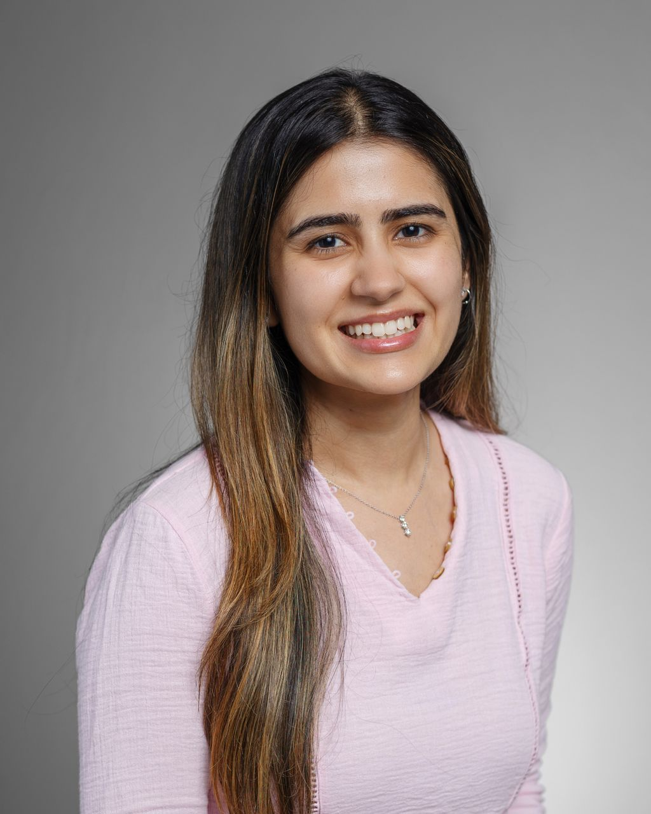

About me

I am a security researcher working on AI safety, with a background in computer architecture and hardware security. My current work is on compute verification and on training-time safety monitoring. See my Research page for details; if you are interested in either project, please reach out. My work in computer architecture, privacy, and secure computation has appeared in ISCA, ASPLOS, PLDI, FPL, BMVC, and TMLR.
I am a Fellow at MATS Research in Berkeley, CA, where I work on compute verification with James Petrie (Future of Life Institute). Through the ERA:AI Fellowship in Technical AI Governance (Cambridge, UK), I work on training-time safety monitoring with Alan Cooney (Google DeepMind). Before these fellowships, I co-developed neural tracing for mechanistic interpretability of LLMs and bio-foundation models with collaborators at the Allen Institute, and I was a research scientist at Meta Reality Labs Research, where I worked on energy-efficient system design for smart glasses, system-level power modeling for wearable devices, and privacy research for extended reality.
I received my PhD from UC Santa Barbara, where I worked with Prof. Tim Sherwood on the design of private computer systems. My dissertation, “A System-level Framework for Privacy”, introduced trace wringing, a technique for sharing program behavior with verifiable bounds on information leakage. I am a Rising Stars in EECS alumna, my SoK on hardware-software-security codesign was cited in the US National Strategy on Microelectronics Research, and trace wringing was recognized as an IEEE Micro Top Pick.
I am on the job market for research positions in industry and academia, including faculty positions. Please feel free to reach out at deekshadangwal@gmail.com.
📰 News
- [Fall 2026] I am co-mentoring a SPAR project on constraint drift through delegation hierarchies with Abhejit Rajagopal.
- [September 2026] I joined MATS Research in Berkeley, CA as a Fellow, working on compute verification.
- [July 2026] I started the ERA:AI Fellowship in Technical AI Governance in Cambridge, UK.
- [2026] Our paper "The Need for Computational Pluralism" was accepted at the Workshop on Ethical Systems and Architecture Design (HotEthics) 2026.
- [September 2025] I represented CRA and Washington State at CRA Congressional Visit Day in Washington, D.C.
- [July 2025] I was an invited participant in the CCC Future of AI Research in Industry workshop.
- [June 2025] I gave a talk on "Performance, Power, and Privacy: Codesign Strategies for Always-On Wearables" at Washington State University, Pullman.
- [May 2025] I was an invited participant in the CCC Computing Futures Symposium.
- [May 2025] I gave a talk on "Privacy and Security in the age of Metaverse" at Washington State University, Everett.
🎓 Education
-
Doctor of Philosophy, Computer Science
University of California, Santa Barbara -
Master of Science, Electrical and Computer Engineering
University of California, Santa Barbara -
Bachelor of Engineering, Instrumentation and Electronics
Ramaiah Institute of Technology, Bangalore, India
🏆 Awards and Honors
- [2024] Our paper (HASP'20) appears in the United States National Strategy on Microelectronics Research
- [2021] UCSB Grad Slam Runner-up: "Privacy through Wringing"
- [2020] Rising Stars in EECS, UC Berkeley
- [2020] IEEE Micro Top Pick: "Trace Wringing for Program Trace Privacy"
- [2020] UCSB Graduate Division's Fiona and Michael Goodchild Graduate Mentoring Award
- [2020] UCSB Department of Computer Science Outstanding Graduate Student Award